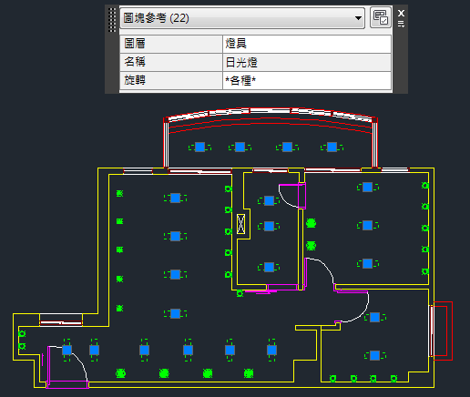

分享XANADU網站提供的lisp選取相同圖塊範例，有需要的朋友請下載使用吧~
SELBLK指令說明：選擇圖面中的目標圖塊後，根據「圖塊名稱」過濾選擇出所有相同的圖塊。
SELBLKS指令說明：透過複選或單一方式，選擇圖面中的目標圖塊後，根據「圖塊名稱」過濾選擇出所有相同的圖塊。
註：操作目的類似於AutoCAD預設的「快速選取」QSELECT指令功能。

程式作者 XANADU網站
http://www.xanadu.cz/
SELBLK指令 及 SELBLKS指令 步驟操作：